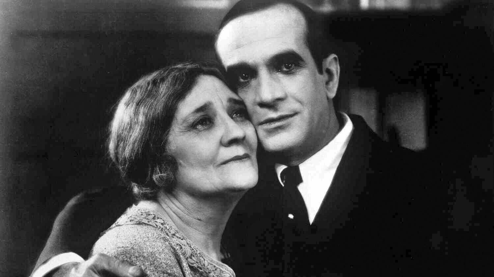

The transition of silent to films with sound was a slow and tedious proces both technologically and behind the scenes, as well as in the audience's eyes. This movement first began its course during the mid 1920s, which changed the cinema going experience forever. This site explores all areas of this transition, along with important actors and figures that helped shape the way we watch movies today.
